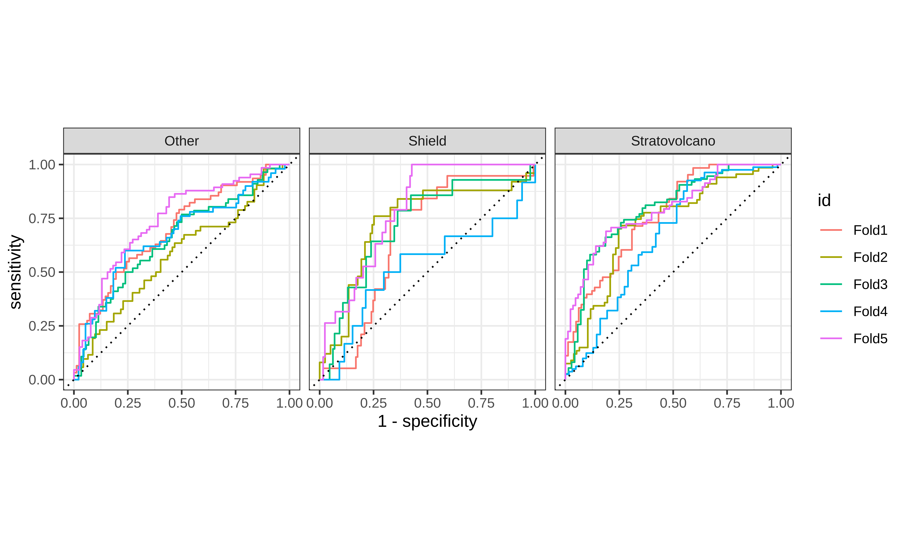
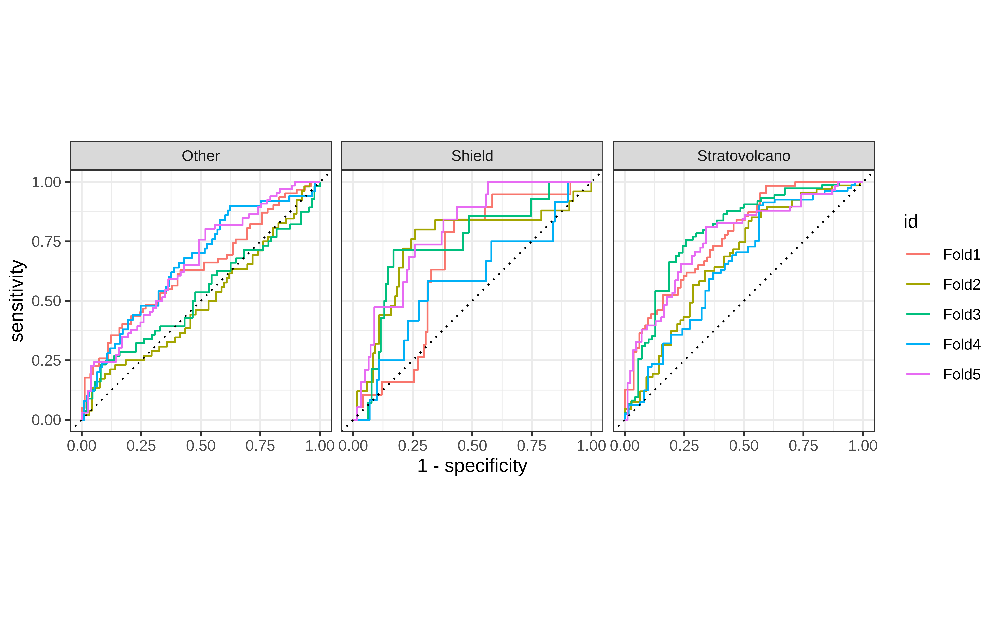
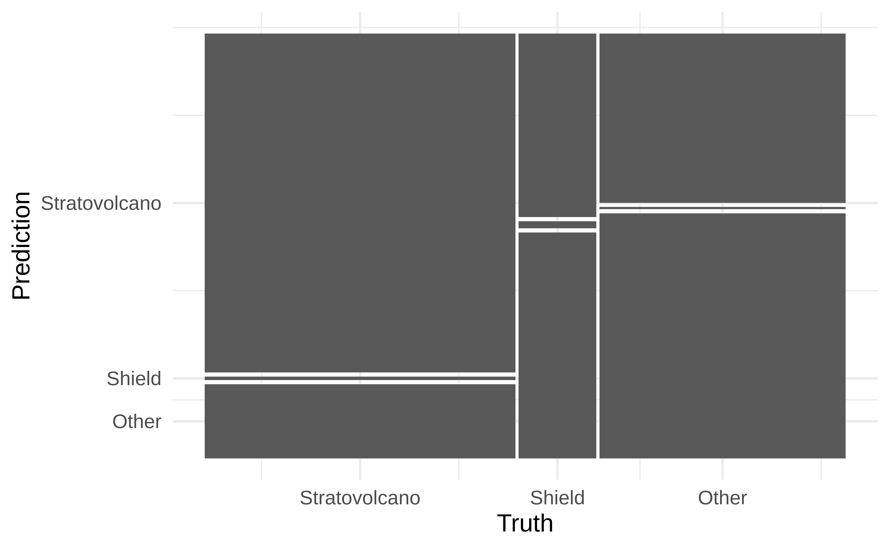
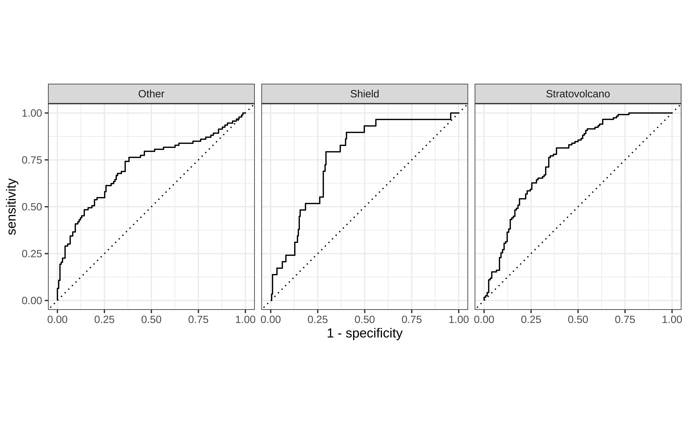

MultiLR: Predictive models (cont.)
STA 210 - Spring 2022
Dr. Mine Çetinkaya-Rundel
Welcome
Topics
- Unbalanced data
- Choosing the “final” model
Computational setup
From last time…
Volcanoes
The data come from The Smithsonian Institution, via TidyTuesday.
[1] "volcano_number" "volcano_name"
[3] "primary_volcano_type" "last_eruption_year"
[5] "country" "region"
[7] "subregion" "latitude"
[9] "longitude" "elevation"
[11] "tectonic_settings" "evidence_category"
[13] "major_rock_1" "major_rock_2"
[15] "major_rock_3" "major_rock_4"
[17] "major_rock_5" "minor_rock_1"
[19] "minor_rock_2" "minor_rock_3"
[21] "minor_rock_4" "minor_rock_5"
[23] "population_within_5_km" "population_within_10_km"
[25] "population_within_30_km" "population_within_100_km"Data prep
volcano <- volcano %>%
mutate(
volcano_type = case_when(
str_detect(primary_volcano_type, "Stratovolcano") ~ "Stratovolcano",
str_detect(primary_volcano_type, "Shield") ~ "Shield",
TRUE ~ "Other"
),
volcano_type = fct_relevel(volcano_type, "Stratovolcano", "Shield", "Other")
) %>%
select(
volcano_type, latitude, longitude,
elevation, tectonic_settings, major_rock_1
) %>%
mutate(across(where(is.character), as_factor))Split into testing/training
Specify a model
Create cross validation folds
Unbalanced data
Unbalanced data
Remember that the observed volcano types are unbalanced:
Addressing unbalance
To address class unbalance, we generally use
- oversampling data from levels that are less prevalent in the data
- e.g.,
step_smote(): Uses a technique called “Synthetic Minority Over-sampling Technique” to generate new examples of the minority class using nearest neighbors of these cases.
- e.g.,
- downsampling data from levels that are more prevalent in the data
- e.g.,
step_downsample(): Removes rows of a data set to make the occurrence of levels in a specific factor level equal.
- e.g.,
New recipe - oversample
New recipe - downsample
New workflows
Fit resamples
Collect metrics
# A tibble: 2 × 6
.metric .estimator mean n std_err .config
<chr> <chr> <dbl> <int> <dbl> <chr>
1 accuracy multiclass 0.517 5 0.0154 Preprocessor1_Model1
2 roc_auc hand_till 0.693 5 0.0270 Preprocessor1_Model1# A tibble: 2 × 6
.metric .estimator mean n std_err .config
<chr> <chr> <dbl> <int> <dbl> <chr>
1 accuracy multiclass 0.485 5 0.0123 Preprocessor1_Model1
2 roc_auc hand_till 0.675 5 0.0219 Preprocessor1_Model1ROC curves - oversampling
ROC curves - downsampling
Addressing unbalance
Can you think of any issues resulting from over/down sampling?
Final model
The “chosen” model
Let’s stick to the models without over/down sampling.
From the application exercise:
volcano_rec2 <- recipe(volcano_type ~ ., data = volcano_train) %>%
step_other(tectonic_settings) %>%
step_other(major_rock_1) %>%
step_dummy(all_nominal_predictors()) %>%
step_zv(all_predictors()) %>%
step_center(all_predictors())
volcano_wflow2 <- workflow() %>%
add_recipe(volcano_rec2) %>%
add_model(volcano_spec)Fitting the final model
Confusion matrix
Confusion matrix - visualized
ROC curve
ROC curve - altogether
📋 github.com/sta210-s22/ae-11-volcanoes - Exercise 3
Prediction
final_fitted <- extract_workflow(final_fit)
new_volcano <- tibble(
latitude = 35.9940,
longitude = -78.8986,
elevation = 404,
tectonic_settings = "Subduction zone / Continental crust (>25 km)",
major_rock_1 = "Andesite / Basaltic Andesite"
)
predict(
final_fitted,
new_volcano,
type = "prob"
)# A tibble: 3 × 1
.pred_value
<dbl>
1 0.381
2 0.0379
3 0.581 Acknowledgements
Inspired by
- https://juliasilge.com/blog/multinomial-volcano-eruptions/
- https://juliasilge.com/blog/nber-papers/